Hasil Modul PPIC: Scheduling dan Work Order
Disusun 9 Oktober 2026 (agen Jo). Semua dijalankan di situs dummy (database ddt*). Tidak ada yang ditulis ke tm2*, ProDev/Inquiry/ProCost tidak diubah.
1. Ulasan modul
Tujuan: pembuatan Work Order dan penjadwalan berjalan otomatis, produksi efisien, dan manusia hanya menangani prioritas dan pengecualian. Model yang diputuskan: Work Order lahir dari data ProDev (BOP, routing, BOM). Engine menyiapkan kesiapan bahan, perkiraan target, waste, setup, lalu jadwal sebagai Draft. Officer Confirm; hanya rencana terkonfirmasi yang menjadi jadwal nyata, dan N shift berikutnya dikunci. Officer memberi prioritas (Hot job / Move up dengan alasan) atau menangani pengecualian.
| Bagian | Status |
|---|---|
| Create Work Order dari rencana kirim CO Confirmed | Selesai (kartu di layar Work Order) |
| Engine: gerbang, perkiraan, solver, auto-plan, confirm, perubahan | Selesai, 12 test engine murni lolos |
| Layar Production Scheduling (Gantt, Kanban, Calendar, Grid, Monitoring) | Selesai |
| Layar Work Order (dieline ProDev, BOP, mesin yang bisa antre, BOM, jadwal, output) | Selesai; dieline kosong untuk data dummy yang belum punya |
| Master Tooling, Setup and Changeover, Wait Rules, Tier Customer, konstanta PPIC_* | Selesai |
| Operator Queue (timer Play/Pause/Stop, qty, Problem ke Maintenance Request) | Selesai |
| Learning engine + layar Learning Changes | Selesai (baru changeover) |
| Jadwal otomatis (02:00, awal shift) dan re-plan saat mesin rusak/pulih; flag akses | Selesai |
| Rilis ke tm2*, waste tetap di ProDev, format cetak WO | Menunggu keputusan Jo |
2. Workflow
- Customer Order Confirmed menghasilkan baris rencana kirim (CPDEL).
- Create Work Order (satu atau semua):
Cpdel::postmembuat WO per part dari ProDev. - Engine melengkapi WO: id proses, mesin yang boleh mengantre, target, setup, gerbang bahan dan tooling.
- Auto-plan membuat Draft (malam 02:00, awal shift, saat WO dibuat, saat mesin rusak atau pulih).
- Officer meninjau Needs attention, memberi prioritas bila perlu, lalu Confirm plan; N shift dikunci.
- Operator menjalankan antrean terkonfirmasi: setup, run, pause, stop, qty. Masalah mesin membuka Maintenance Request.
- Waktu nyata masuk log; Learning mengoreksi nilai Assumed; Monitoring membandingkan rencana dan aktual.
3. Data flow
| Dari | Ke | Isi |
|---|---|---|
| co_order_delivery (tm2sdi) | prd_wo, prd_wo_operation, prd_wo_material (tm2prd) | WO per part dengan BOP dan BOM dari ProDev, beku di WO |
| prod_process_machine, prod_machine, prod_tooling_asset (tm2mst) | prd_wo_operation_machine | Mesin eligible, target, setup, alasan bila tidak boleh |
| Material Planning (MRP) | gate_material, material_ready_at | Ready / Waiting + tanggal / Blocked |
| Draft_* kolom di prd_wo_operation | machine_id, target_start/finish, is_locked | Saat Confirm; dicatat di prd_plan_run dan prd_plan_decision |
| Operator Queue | prd_operation_time_log, prd_wo_operation_output(+defect) | Menit setup/run/pause dan qty baik, waste, reject |
| prd_operation_time_log | prod_machine_changeover | Learning: median N job, langkah maks 20 persen, log LEARN |
| prod_machine_downtime | auto-plan (EVENT) | Mesin rusak/pulih memicu Draft baru |
Tanpa foreign key lintas database; relasi dicocokkan di PHP.
4. Engine yang dibuat
| Engine | Fungsi | Contoh dari demo |
|---|---|---|
| Work Order Enrichment | Proses, mesin eligible, target, setup, qty masuk dan keluar per langkah | WO2600265: 2.500 lembar, 5 langkah; Komori GL440 ditolak karena BREAKDOWN |
| Readiness Gates | Gerbang bahan, tooling, artwork | WO2600250/260: Blocked, kurang tinta BRITE INK BLACK |
| Setup Time Engine | Setup dasar + changeover + tooling | CETAK 15 menit; Plong 15; Lem 15 |
| Schedule Solver | Ranking, mesin paling cepat selesai, kalender, wait | CETAK 09-Okt 11:33 sampai 12:47 di DIG-02 |
| PPIC Auto-Planner | Menyiapkan Draft + daftar pengecualian | Draft #14: 32 operasi, 31 terjadwal |
| Plan Confirm and Change | Confirm, kunci N shift, prioritas, dampak drag | Confirm #14: 17 dikonfirmasi, 12 dikunci |
| Operator Timer | Play/Pause/Stop, log waktu, output | Setup CETAK WO2600265 di DIG-02, rencana 15 menit |
| Learning Engine | Koreksi changeover Assumed, log, revert + bekukan | Uji: 20 menit menjadi 22 menit dari 5 job median 26 |
| PlanEvents / Machine Downtime | Mesin rusak atau pulih memicu Draft baru | LAM-04 rusak: Draft #15, lalu #16 |
Semua terdaftar di Engine Catalog (devlib.test > Engines); rumus ProCost tidak disentuh.
5. Implementasi di layar (screenshot situs dummy)
5.1 Create Work Order (sebelum)
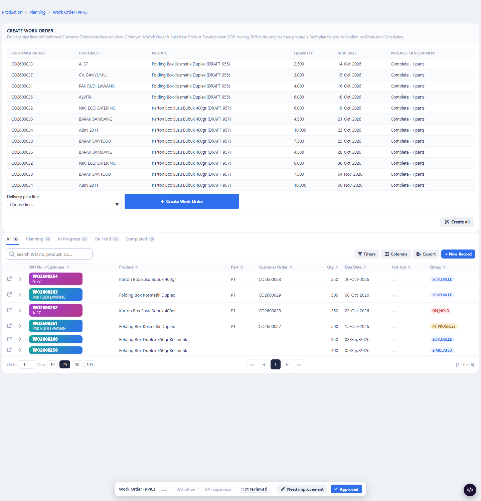
5.2 Setelah membuat tiga WO (WO2600265 2.500, WO2600266 3.000, WO2600267 4.000)
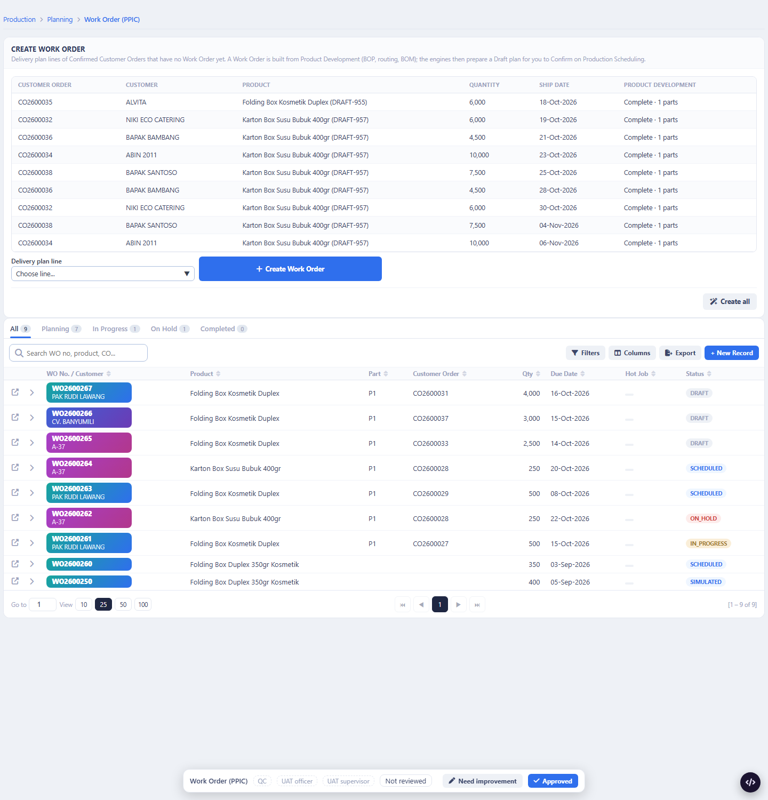
5.3 Layar Work Order WO2600265
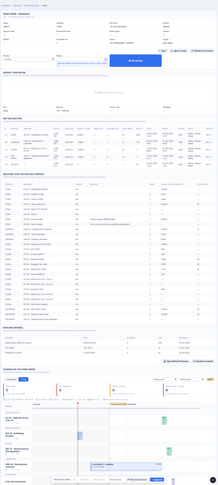
5.4 Production Scheduling: Draft #14
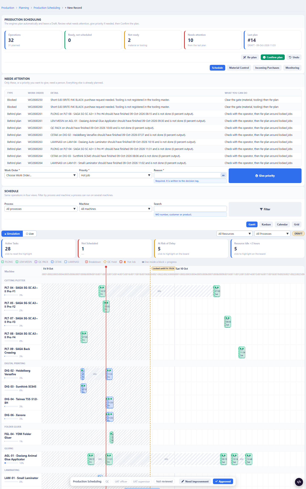
5.5 Setelah Confirm (17 operasi, 12 dikunci)
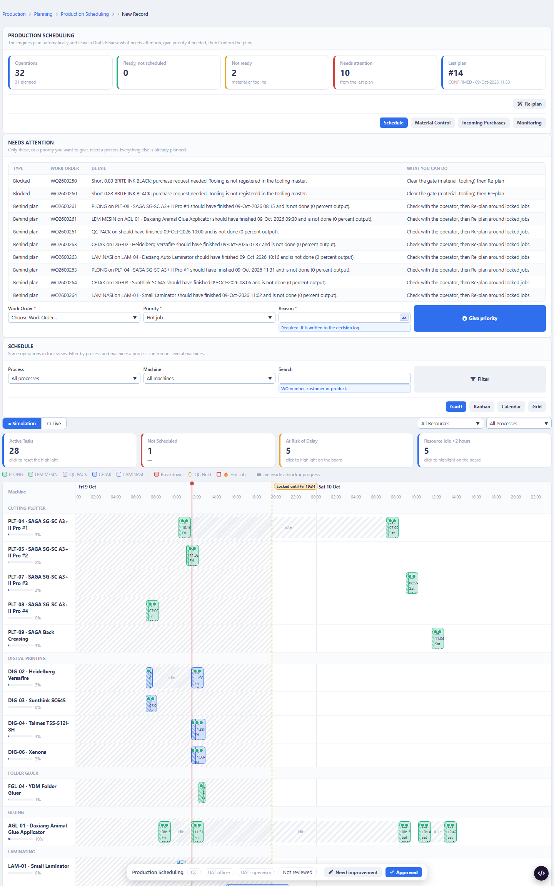
5.6 Kanban
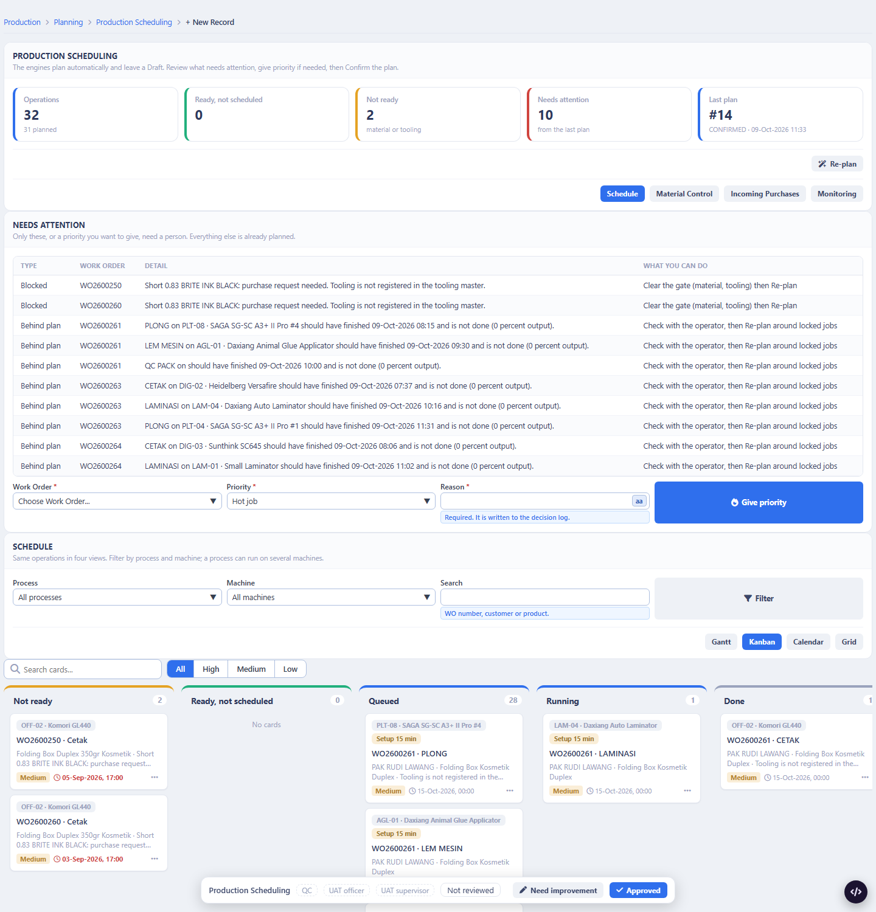
5.7 Operator Queue (setup berjalan)
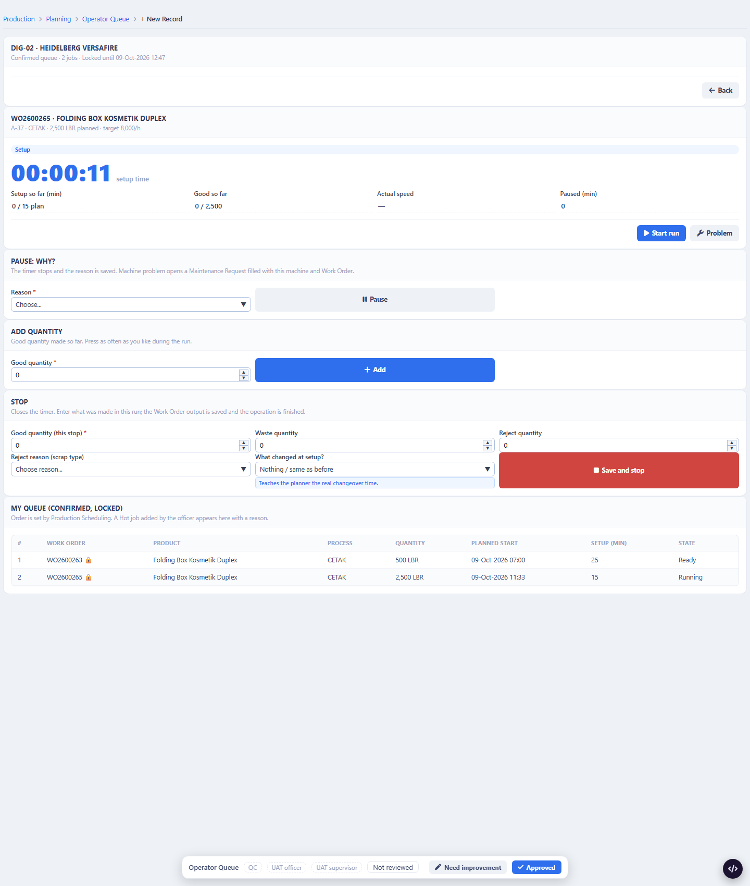
5.8 Mesin LAM-04 rusak, Draft baru #16
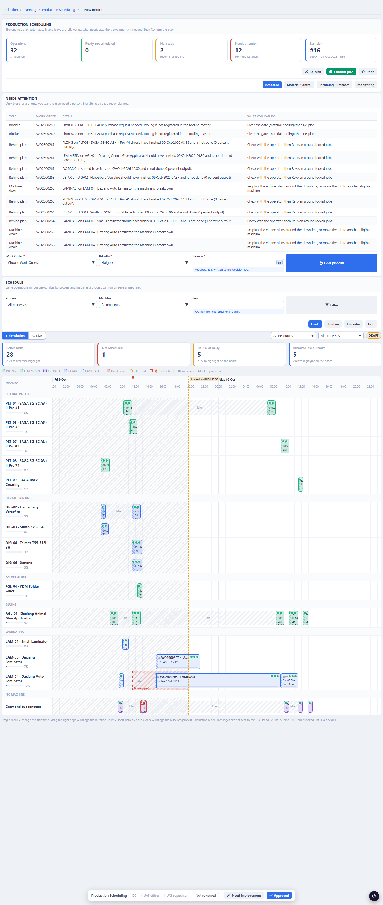
5.9 Learning Changes
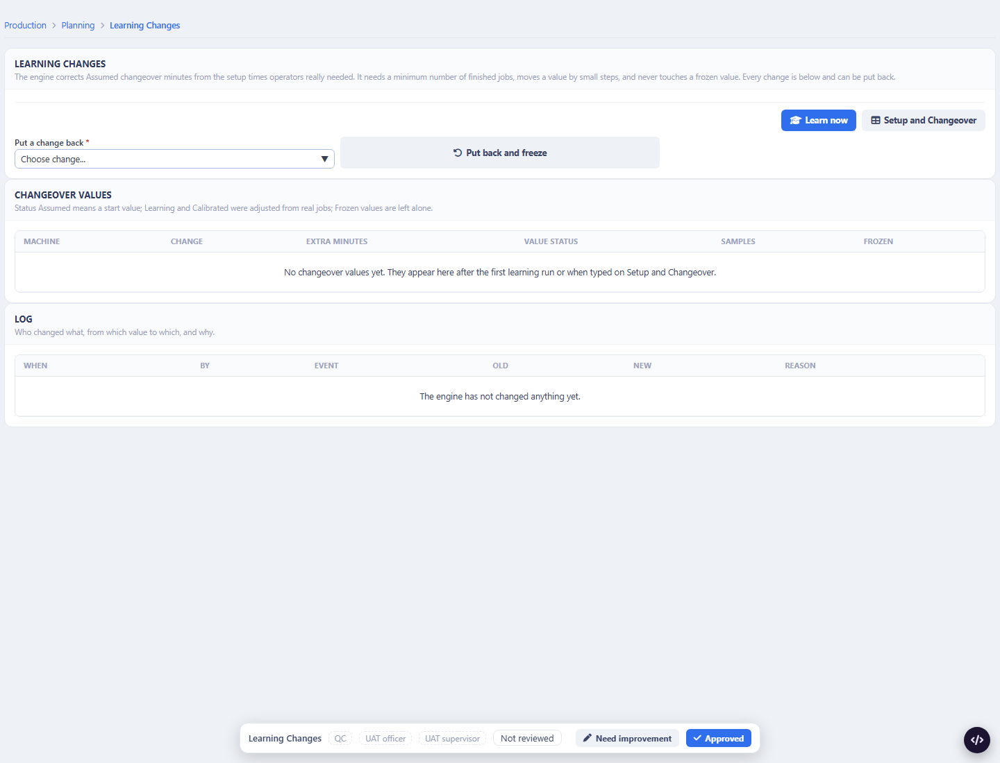
5.10 Tooling Master
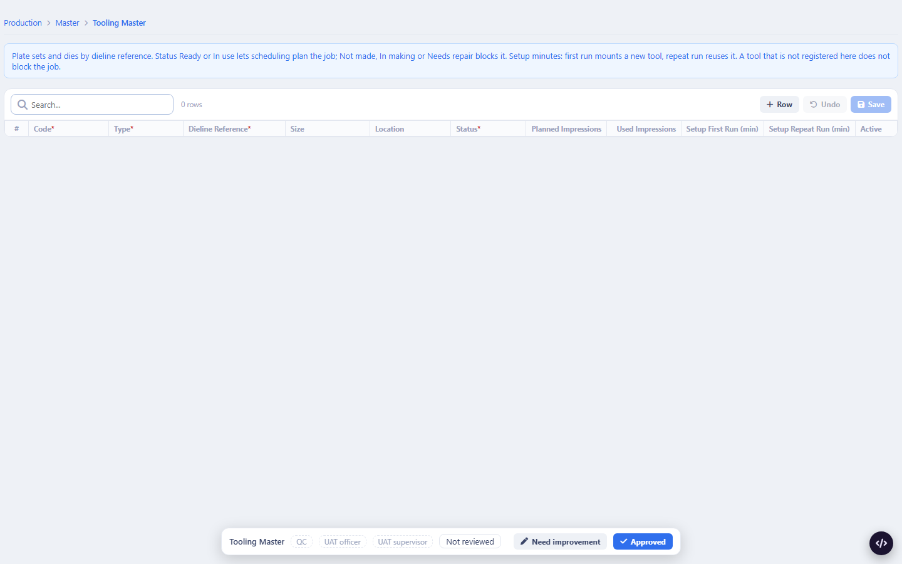
5.11 Grid
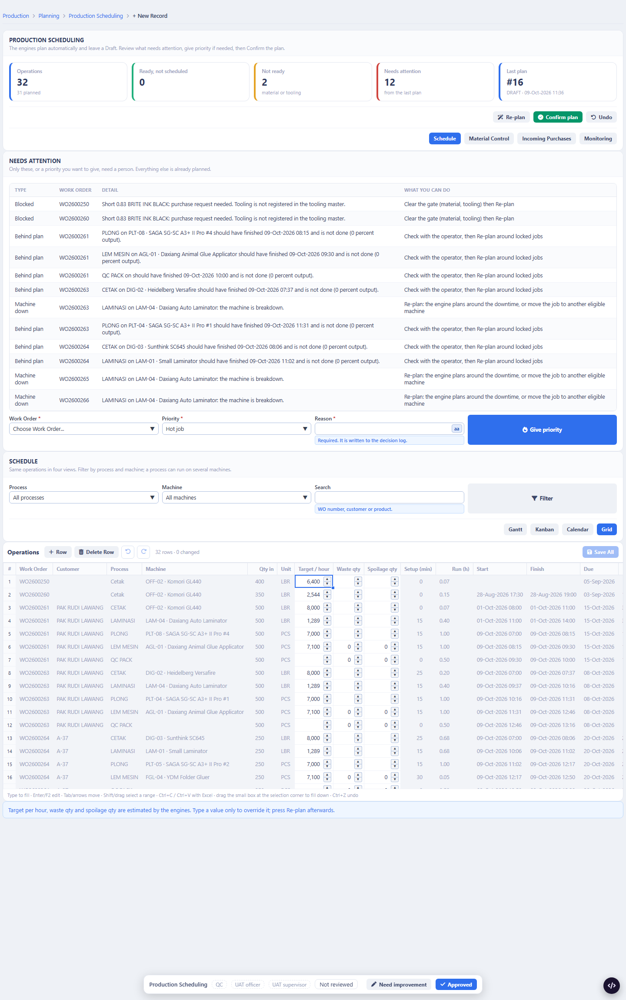
6. Print out
File terlampir: print_work_order_WO2600265.pdf dan print_jadwal_produksi.pdf. Ini cetakan dari layar, bukan format cetak resmi: format cetak Work Order (mockup A5/A4) belum disetujui Jo dan belum dipasang. Cetak langsung dari browser (headless) menghasilkan PDF hampir kosong (2 KB); penyebabnya belum saya selidiki, jadi PDF terlampir dibuat dari screenshot.
7. Temuan saat saya periksa sendiri (apa adanya)
- Target tidak konsisten: tabel BOP di WO dan layar operator menampilkan 8.000/jam untuk CETAK di DIG-02, sedangkan tabel mesin di layar yang sama menulis 2.544/jam dan lama jalan 0,98 jam mengikuti 2.544. Nilai tersimpan di operasi belum diperbarui ke target mesin terpilih.
- Data ProDev dummy kosong: Ups, ukuran lembar, board, warna, dieline di WO2600265 tampil "—" dan dieline "belum ada"; bahan kertas "belum dipilih di Inquiry" jumlah 0, sehingga gerbang bahan otomatis Ready.
- Gantt: bar pendek dan teks terpotong (10 px per jam). Label jam yang bertumpuk sudah saya perbaiki hari ini (label tiap beberapa jam).
- Mesin rusak: operasi yang sudah terkunci di mesin itu tidak dipindah engine (sesuai aturan kunci). Engine kini menghindari mesin rusak untuk operasi yang belum terkunci; yang terkunci muncul sebagai "Machine down" untuk officer. Perbaikan ini baru saya tulis hari ini.
- Behind plan: daftar penuh dengan WO dummy lama (WO2600261, 263, 264) yang jadwalnya sudah lewat; itu bukan error engine, tetapi data lama.
- Breadcrumb "+ New Record" muncul di semua layar PPIC; sisa pola layar, belum saya bersihkan.
- Perhitungan material (MRP) lambat; seed 8 job memakan sekitar 3 menit.
- Video: yang saya buat adalah slideshow bernomor dengan caption Bahasa Indonesia (autoplay), bukan rekaman video. Rekaman video sungguhan belum dibuat.
8. Asumsi dan keputusan menunggu Jo
- Asumsi: auto-plan di jam tetap dan saat kejadian; bottleneck otomatis dengan penimpaan officer; subkon = flag inhouse pada proses; layar operator termasuk lingkup; grup Production Planning, Production Manager, Operations Manager memegang PPIC_SCHEDULING; Production Planning dan Manager Inventory memegang PPIC_INVENTORY.
- Menunggu: rilis ke tm2* (migration, help, menu); waste tetap (make-ready) di rantai ProDev; format cetak Work Order; pemegang status tooling; penerapan PPIC_INVENTORY di layar booking dan shortage (milik agen Inventory).